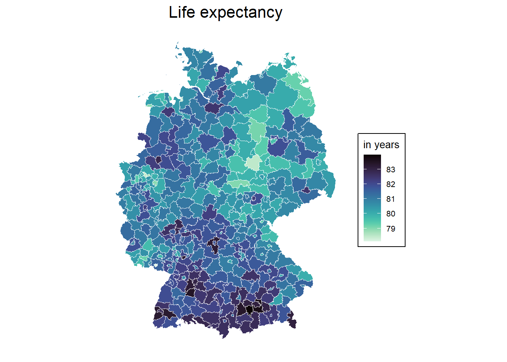

11 Exercises III
\[ \newcommand{\tr}{\mathrm{tr}} \newcommand{\rank}{\mathrm{rank}} \newcommand{\plim}{\operatornamewithlimits{plim}} \newcommand{\diag}{\mathrm{diag}} \newcommand{\bm}[1]{\boldsymbol{\mathbf{#1}}} \newcommand{\Var}{\mathrm{Var}} \newcommand{\Exp}{\mathrm{E}} \newcommand{\Cov}{\mathrm{Cov}} \newcommand\given[1][]{\:#1\vert\:} \newcommand{\irow}[1]{% \begin{pmatrix}#1\end{pmatrix} } \]
Required packages
Session info
R version 4.5.1 (2025-06-13 ucrt)
Platform: x86_64-w64-mingw32/x64
Running under: Windows 11 x64 (build 22631)
Matrix products: default
LAPACK version 3.12.1
locale:
[1] LC_COLLATE=English_United Kingdom.utf8
[2] LC_CTYPE=English_United Kingdom.utf8
[3] LC_MONETARY=English_United Kingdom.utf8
[4] LC_NUMERIC=C
[5] LC_TIME=English_United Kingdom.utf8
time zone: Europe/Berlin
tzcode source: internal
attached base packages:
[1] stats graphics grDevices utils datasets methods
[7] base
other attached packages:
[1] SDPDmod_0.0.6 splm_1.6-5 lfe_3.1.1
[4] plm_2.6-6 viridis_0.6.5 viridisLite_0.4.2
[7] tmap_4.1 ggplot2_3.5.2 spatialreg_1.3-6
[10] Matrix_1.7-3 spdep_1.3-13 spData_2.3.4
[13] mapview_2.11.2 sf_1.0-21
loaded via a namespace (and not attached):
[1] Rdpack_2.6.4 DBI_1.2.3
[3] deldir_2.0-4 gridExtra_2.3
[5] tmaptools_3.2 s2_1.1.9
[7] logger_0.4.0 sandwich_3.1-1
[9] rlang_1.1.6 magrittr_2.0.3
[11] multcomp_1.4-28 e1071_1.7-16
[13] compiler_4.5.1 png_0.1-8
[15] vctrs_0.6.5 stringr_1.5.1
[17] pkgconfig_2.0.3 wk_0.9.4
[19] fastmap_1.2.0 lwgeom_0.2-14
[21] leafem_0.2.4 rmarkdown_2.29
[23] spacesXYZ_1.6-0 miscTools_0.6-28
[25] xfun_0.52 satellite_1.0.5
[27] jsonlite_2.0.0 collapse_2.1.2
[29] terra_1.8-54 parallel_4.5.1
[31] LearnBayes_2.15.1 R6_2.6.1
[33] stringi_1.8.7 RColorBrewer_1.1-3
[35] boot_1.3-31 lmtest_0.9-40
[37] stars_0.6-8 Rcpp_1.0.14
[39] knitr_1.50 zoo_1.8-14
[41] base64enc_0.1-3 leaflet.providers_2.0.0
[43] splines_4.5.1 tidyselect_1.2.1
[45] rstudioapi_0.17.1 dichromat_2.0-0.1
[47] abind_1.4-8 maptiles_0.10.0
[49] maxLik_1.5-2.1 codetools_0.2-20
[51] lattice_0.22-7 tibble_3.3.0
[53] leafsync_0.1.0 withr_3.0.2
[55] coda_0.19-4.1 evaluate_1.0.4
[57] survival_3.8-3 units_0.8-7
[59] proxy_0.4-27 pillar_1.10.2
[61] KernSmooth_2.23-26 stats4_4.5.1
[63] generics_0.1.4 sp_2.2-0
[65] scales_1.4.0 xtable_1.8-4
[67] class_7.3-23 glue_1.8.0
[69] tools_4.5.1 leaflegend_1.2.1
[71] data.table_1.17.6 RSpectra_0.16-2
[73] dotCall64_1.2 mvtnorm_1.3-3
[75] XML_3.99-0.18 grid_4.5.1
[77] rbibutils_2.3 crosstalk_1.2.1
[79] bdsmatrix_1.3-7 colorspace_2.1-1
[81] nlme_3.1-168 cols4all_0.8
[83] raster_3.6-32 Formula_1.2-5
[85] cli_3.6.5 spam_2.11-1
[87] dplyr_1.1.4 gtable_0.3.6
[89] digest_0.6.37 classInt_0.4-11
[91] TH.data_1.1-3 htmlwidgets_1.6.4
[93] farver_2.1.2 htmltools_0.5.8.1
[95] lifecycle_1.0.4 leaflet_2.2.2
[97] MASS_7.3-65 Reload data from pervious session
load("_data/msoa2_spatial.RData")11.1 Environmental inequality (continued)
Let’s use the same neighbours weights definition as before:
coords <- st_centroid(msoa.spdf)Warning: st_centroid assumes attributes are constant over
geometries# Neighbours within 3km distance
dist_15.nb <- dnearneigh(coords, d1 = 0, d2 = 2500)Warning in dnearneigh(coords, d1 = 0, d2 = 2500): neighbour object
has 6 sub-graphssummary(dist_15.nb)Neighbour list object:
Number of regions: 983
Number of nonzero links: 15266
Percentage nonzero weights: 1.579859
Average number of links: 15.53001
4 regions with no links:
158, 463, 478, 505
6 disjoint connected subgraphs
Link number distribution:
0 1 2 3 4 5 6 7 8 9 10 11 12 13 14 15 16 17 18 19 20 21
4 5 9 23 19 26 36 31 53 39 61 63 59 48 42 35 24 31 28 30 27 26
22 23 24 25 26 27 28 29 30 31 32 33 34
25 19 38 29 32 38 26 16 20 10 8 1 2
5 least connected regions:
160 469 474 597 959 with 1 link
2 most connected regions:
565 567 with 34 links# There are some empty neighbour sets. Lets impute those with the nearest neighbour.
k2.nb <- knearneigh(coords, k = 1)
# Replace zero
nolink_ids <- which(card(dist_15.nb) == 0)
dist_15.nb[card(dist_15.nb) == 0] <- k2.nb$nn[nolink_ids, ]
summary(dist_15.nb)Neighbour list object:
Number of regions: 983
Number of nonzero links: 15270
Percentage nonzero weights: 1.580273
Average number of links: 15.53408
6 disjoint connected subgraphs
Link number distribution:
1 2 3 4 5 6 7 8 9 10 11 12 13 14 15 16 17 18 19 20 21 22
9 9 23 19 26 36 31 53 39 61 63 59 48 42 35 24 31 28 30 27 26 25
23 24 25 26 27 28 29 30 31 32 33 34
19 38 29 32 38 26 16 20 10 8 1 2
9 least connected regions:
158 160 463 469 474 478 505 597 959 with 1 link
2 most connected regions:
565 567 with 34 links# listw object with row-normalization
dist_15.lw <- nb2listw(dist_15.nb, style = "W")and estiamte the spatial SAR model:
mod_1.sar <- lagsarlm(log(no2) ~ per_mixed + per_asian + per_black + per_other
+ per_nonUK_EU + per_nonEU + log(POPDEN),
data = msoa.spdf,
listw = dist_15.lw,
Durbin = FALSE) # we could here extend to SDM
summary(mod_1.sar)
Call:
lagsarlm(formula = log(no2) ~ per_mixed + per_asian + per_black +
per_other + per_nonUK_EU + per_nonEU + log(POPDEN), data = msoa.spdf,
listw = dist_15.lw, Durbin = FALSE)
Residuals:
Min 1Q Median 3Q Max
-0.2140485 -0.0267085 -0.0021421 0.0238337 0.3505513
Type: lag
Coefficients: (asymptotic standard errors)
Estimate Std. Error z value Pr(>|z|)
(Intercept) -1.7004e-02 1.8122e-02 -0.9383 0.348110
per_mixed 3.4376e-04 1.4758e-03 0.2329 0.815810
per_asian -8.5205e-05 1.1494e-04 -0.7413 0.458507
per_black -4.2754e-04 2.3468e-04 -1.8218 0.068484
per_other 1.9693e-03 7.4939e-04 2.6279 0.008591
per_nonUK_EU 8.9027e-04 3.9638e-04 2.2460 0.024703
per_nonEU 1.8460e-03 3.5159e-04 5.2506 1.516e-07
log(POPDEN) 1.8650e-02 2.7852e-03 6.6963 2.138e-11
Rho: 0.9684, LR test value: 2002.5, p-value: < 2.22e-16
Asymptotic standard error: 0.0063124
z-value: 153.41, p-value: < 2.22e-16
Wald statistic: 23535, p-value: < 2.22e-16
Log likelihood: 1562.401 for lag model
ML residual variance (sigma squared): 0.0020568, (sigma: 0.045352)
Number of observations: 983
Number of parameters estimated: 10
AIC: -3104.8, (AIC for lm: -1104.3)
LM test for residual autocorrelation
test value: 108.97, p-value: < 2.22e-161) Please calculate the true multiplier matrix of this SAR model.
The multiplier matrix is given by \(({\bm I_N}-\rho {\bm W})^{-1}\).
W <- listw2mat(dist_15.lw)
I <- diag(dim(W)[1])
rho <- unname(mod_1.sar$rho)
M <- solve(I - rho*W)
M[1:10, 1:10] 1 2 3 4 5
1 1.164650997 0.002433319 0.004089559 0.004034508 0.006545994
2 0.010706605 1.407336301 0.643881932 0.370049927 0.464794934
3 0.011246286 0.402426207 1.474021599 0.429011868 0.641526285
4 0.008875918 0.185024963 0.343209495 1.684533322 0.614086824
5 0.012000989 0.193664556 0.427684190 0.511739020 1.560840834
6 0.010741524 0.192552594 0.452940016 0.631452476 0.672787841
7 0.012779708 0.141953871 0.299247377 0.418234186 0.616895800
8 0.014769006 0.125781189 0.253122442 0.295553039 0.500919513
9 0.011708131 0.147549264 0.309080773 0.568442619 0.629156269
10 0.009937859 0.152900148 0.306652041 0.727001926 0.553973310
6 7 8 9 10
1 0.004882511 0.005808958 0.00872714 0.005854065 0.003613767
2 0.385105188 0.283907742 0.32703109 0.324608380 0.244640237
3 0.566175019 0.374059222 0.41132397 0.424986063 0.306652041
4 0.631452476 0.418234186 0.38421895 0.625286881 0.581601541
5 0.560656534 0.514079833 0.54266281 0.576726580 0.369315540
6 1.571175245 0.558170218 0.46513922 0.661184961 0.543820047
7 0.558170218 1.475511568 0.58520461 0.614170880 0.463886540
8 0.357799398 0.450157392 1.46638195 0.474994894 0.272339890
9 0.601077237 0.558337164 0.56135760 1.581077095 0.517983092
10 0.679775059 0.579858175 0.44255232 0.712226751 1.5600831382) Create an N x N effects matrix for the effect of the non-EU citizens. What is the effect of unit 6 on unit 10? Why is this larger than the effect of unit 5 on unit 8?
# For beta 1
beta <- mod_1.sar$coefficients
effM <- beta["per_nonEU"] * M
effM[1:10, 1:10] 1 2 3 4 5
1 2.149995e-03 4.492010e-06 7.549498e-06 7.447872e-06 1.208418e-05
2 1.976484e-05 2.598002e-03 1.188633e-03 6.831278e-04 8.580311e-04
3 2.076112e-05 7.428958e-04 2.721106e-03 7.919740e-04 1.184285e-03
4 1.638532e-05 3.415639e-04 6.335792e-04 3.109720e-03 1.133630e-03
5 2.215433e-05 3.575129e-04 7.895231e-04 9.446918e-04 2.881378e-03
6 1.982931e-05 3.554602e-04 8.361464e-04 1.165688e-03 1.241995e-03
7 2.359188e-05 2.620528e-04 5.524233e-04 7.720780e-04 1.138816e-03
8 2.726421e-05 2.321974e-04 4.672747e-04 5.456034e-04 9.247186e-04
9 2.161370e-05 2.723822e-04 5.705762e-04 1.049369e-03 1.161449e-03
10 1.834571e-05 2.822601e-04 5.660926e-04 1.342076e-03 1.022658e-03
6 7 8 9 10
1 9.013321e-06 1.072358e-05 1.611067e-05 1.080685e-05 6.671166e-06
2 7.109204e-04 5.241057e-04 6.037132e-04 5.992408e-04 4.516162e-04
3 1.045183e-03 6.905291e-04 7.593214e-04 7.845422e-04 5.660926e-04
4 1.165688e-03 7.720780e-04 7.092844e-04 1.154306e-03 1.073661e-03
5 1.034996e-03 9.490131e-04 1.001778e-03 1.064662e-03 6.817721e-04
6 2.900456e-03 1.030406e-03 8.586666e-04 1.220575e-03 1.003915e-03
7 1.030406e-03 2.723857e-03 1.080312e-03 1.133785e-03 8.563541e-04
8 6.605128e-04 8.310095e-04 2.707003e-03 8.768606e-04 5.027509e-04
9 1.109614e-03 1.030714e-03 1.036290e-03 2.918735e-03 9.562187e-04
10 1.254893e-03 1.070443e-03 8.169703e-04 1.314801e-03 2.879979e-03# "Effect" of unit 6 on unit 10
effM[10, 6][1] 0.001254893# "Effect" of unit 5 on unit 8
effM[8, 5][1] 0.00092471863) Calculate and interpret the summary impact measures of the SAR model.
mod_1.sar.imp <- impacts(mod_1.sar, listw = dist_15.lw, R = 300)
summary(mod_1.sar.imp)Impact measures (lag, exact):
Direct Indirect Total
per_mixed 0.0004939013 0.010385844 0.010879745
per_asian -0.0001224192 -0.002574253 -0.002696672
per_black -0.0006142789 -0.012917166 -0.013531445
per_other 0.0028294759 0.059498722 0.062328198
per_nonUK_EU 0.0012791011 0.026897166 0.028176267
per_nonEU 0.0026523198 0.055773451 0.058425770
log(POPDEN) 0.0267960076 0.563471199 0.590267206
========================================================
Simulation results ( variance matrix):
Direct:
Iterations = 1:300
Thinning interval = 1
Number of chains = 1
Sample size per chain = 300
1. Empirical mean and standard deviation for each variable,
plus standard error of the mean:
Mean SD Naive SE Time-series SE
per_mixed 0.0003955 0.0020514 1.184e-04 9.130e-05
per_asian -0.0001260 0.0001637 9.451e-06 9.451e-06
per_black -0.0006107 0.0003414 1.971e-05 2.185e-05
per_other 0.0027690 0.0010486 6.054e-05 6.054e-05
per_nonUK_EU 0.0012574 0.0005128 2.961e-05 3.742e-05
per_nonEU 0.0026802 0.0005208 3.007e-05 3.007e-05
log(POPDEN) 0.0272447 0.0035162 2.030e-04 1.873e-04
2. Quantiles for each variable:
2.5% 25% 50% 75% 97.5%
per_mixed -0.0035491 -0.0009365 0.0004515 1.689e-03 4.338e-03
per_asian -0.0004513 -0.0002480 -0.0001320 -7.792e-06 2.074e-04
per_black -0.0012931 -0.0008387 -0.0005998 -3.887e-04 3.045e-05
per_other 0.0007558 0.0021335 0.0027984 3.463e-03 4.645e-03
per_nonUK_EU 0.0001030 0.0009395 0.0012639 1.598e-03 2.282e-03
per_nonEU 0.0017652 0.0023047 0.0026757 3.026e-03 3.661e-03
log(POPDEN) 0.0202881 0.0246183 0.0275154 2.969e-02 3.335e-02
========================================================
Indirect:
Iterations = 1:300
Thinning interval = 1
Number of chains = 1
Sample size per chain = 300
1. Empirical mean and standard deviation for each variable,
plus standard error of the mean:
Mean SD Naive SE Time-series SE
per_mixed 0.007473 0.047148 0.0027221 0.0020687
per_asian -0.002823 0.003704 0.0002138 0.0002138
per_black -0.013241 0.008237 0.0004756 0.0004756
per_other 0.059451 0.024620 0.0014214 0.0014214
per_nonUK_EU 0.026676 0.011237 0.0006488 0.0006488
per_nonEU 0.058351 0.017870 0.0010317 0.0009293
log(POPDEN) 0.586124 0.128016 0.0073910 0.0073910
2. Quantiles for each variable:
2.5% 25% 50% 75% 97.5%
per_mixed -0.087208 -0.020030 0.010085 0.0360970 0.1017574
per_asian -0.010475 -0.005587 -0.002511 -0.0001578 0.0041606
per_black -0.031040 -0.018548 -0.012724 -0.0077485 0.0006373
per_other 0.014713 0.044251 0.057154 0.0742144 0.1138602
per_nonUK_EU 0.002563 0.019605 0.026637 0.0344823 0.0495324
per_nonEU 0.033019 0.044297 0.056318 0.0691705 0.0980183
log(POPDEN) 0.381359 0.506172 0.561225 0.6496823 0.8681111
========================================================
Total:
Iterations = 1:300
Thinning interval = 1
Number of chains = 1
Sample size per chain = 300
1. Empirical mean and standard deviation for each variable,
plus standard error of the mean:
Mean SD Naive SE Time-series SE
per_mixed 0.007869 0.049159 0.002838 0.0021569
per_asian -0.002949 0.003863 0.000223 0.0002230
per_black -0.013852 0.008556 0.000494 0.0004940
per_other 0.062220 0.025543 0.001475 0.0014747
per_nonUK_EU 0.027934 0.011692 0.000675 0.0006750
per_nonEU 0.061032 0.018276 0.001055 0.0009504
log(POPDEN) 0.613368 0.129770 0.007492 0.0074923
2. Quantiles for each variable:
2.5% 25% 50% 75% 97.5%
per_mixed -0.090560 -0.021083 0.010707 0.0377794 0.106124
per_asian -0.010927 -0.005828 -0.002638 -0.0001644 0.004364
per_black -0.032223 -0.019289 -0.013337 -0.0081507 0.000671
per_other 0.015469 0.046374 0.059926 0.0779057 0.118405
per_nonUK_EU 0.002666 0.020685 0.027950 0.0360264 0.051264
per_nonEU 0.034888 0.046503 0.059122 0.0721772 0.101514
log(POPDEN) 0.403963 0.533658 0.588655 0.6803889 0.8979014) Is SAR the right model choice or would you rather estimate a different model? Please run a Durbin model and caculate its impact summary measures
# Spatial Dubrbin model
mod_1.durb <- lagsarlm(log(no2) ~ per_mixed + per_asian + per_black + per_other
+ per_nonUK_EU + per_nonEU + log(POPDEN),
data = msoa.spdf,
listw = dist_15.lw,
Durbin = TRUE)
summary(mod_1.durb)
Call:
lagsarlm(formula = log(no2) ~ per_mixed + per_asian + per_black +
per_other + per_nonUK_EU + per_nonEU + log(POPDEN), data = msoa.spdf,
listw = dist_15.lw, Durbin = TRUE)
Residuals:
Min 1Q Median 3Q Max
-0.1854009 -0.0263818 -0.0020816 0.0229647 0.3321974
Type: mixed
Coefficients: (asymptotic standard errors)
Estimate Std. Error z value Pr(>|z|)
(Intercept) -0.00409824 0.01983728 -0.2066 0.83633
per_mixed 0.00434535 0.00218712 1.9868 0.04695
per_asian -0.00028620 0.00023959 -1.1945 0.23227
per_black -0.00056734 0.00034455 -1.6466 0.09964
per_other 0.00222708 0.00112918 1.9723 0.04857
per_nonUK_EU 0.00085417 0.00059478 1.4361 0.15097
per_nonEU 0.00095220 0.00052681 1.8075 0.07069
log(POPDEN) 0.02649122 0.00320358 8.2693 2.220e-16
lag.per_mixed -0.00475294 0.00315799 -1.5051 0.13231
lag.per_asian 0.00024092 0.00028983 0.8312 0.40584
lag.per_black 0.00025812 0.00054125 0.4769 0.63344
lag.per_other -0.00074506 0.00176141 -0.4230 0.67230
lag.per_nonUK_EU 0.00094549 0.00100320 0.9425 0.34595
lag.per_nonEU 0.00130970 0.00078547 1.6674 0.09544
lag.log(POPDEN) -0.02526415 0.00588517 -4.2928 1.764e-05
Rho: 0.98286, LR test value: 1536.9, p-value: < 2.22e-16
Asymptotic standard error: 0.0051804
z-value: 189.73, p-value: < 2.22e-16
Wald statistic: 35997, p-value: < 2.22e-16
Log likelihood: 1576.566 for mixed model
ML residual variance (sigma squared): 0.001969, (sigma: 0.044374)
Number of observations: 983
Number of parameters estimated: 17
AIC: -3119.1, (AIC for lm: -1584.3)
LM test for residual autocorrelation
test value: 103.97, p-value: < 2.22e-16# Impact measures of the Durbin Error model
mod_1.durb.imp <- impacts(mod_1.durb, listw = dist_15.lw, R = 300)
summary(mod_1.durb.imp, zstats = TRUE, short = TRUE)Impact measures (mixed, exact):
Direct Indirect Total
per_mixed 0.0040597904 -0.027843988 -0.023784197
per_asian -0.0003101210 -0.002332322 -0.002642443
per_black -0.0007447486 -0.017299184 -0.018043932
per_other 0.0030823781 0.083398408 0.086480787
per_nonUK_EU 0.0019115634 0.103104372 0.105015935
per_nonEU 0.0022824096 0.129706442 0.131988851
log(POPDEN) 0.0269491699 0.044653927 0.071603096
========================================================
Simulation results ( variance matrix):
========================================================
Simulated standard errors
Direct Indirect Total
per_mixed 0.0024339363 0.141825505 0.142745285
per_asian 0.0002358806 0.009566588 0.009608176
per_black 0.0003538376 0.024659362 0.024828224
per_other 0.0012492046 0.078285397 0.078805334
per_nonUK_EU 0.0007003029 0.061007228 0.061381860
per_nonEU 0.0006015436 0.061945576 0.062257328
log(POPDEN) 0.0043279256 0.360475881 0.363229809
Simulated z-values:
Direct Indirect Total
per_mixed 1.656637 -0.2453045 -0.2154767
per_asian -1.386515 -0.3517739 -0.3842902
per_black -2.061782 -0.7027223 -0.7273263
per_other 2.474371 1.1662018 1.1977307
per_nonUK_EU 2.765366 1.7525849 1.7734383
per_nonEU 3.807126 2.2494601 2.2749813
log(POPDEN) 6.220852 0.1141200 0.1873770
Simulated p-values:
Direct Indirect Total
per_mixed 0.09759283 0.806221 0.829396
per_asian 0.16558968 0.725008 0.700763
per_black 0.03922853 0.482229 0.467026
per_other 0.01334709 0.243533 0.231022
per_nonUK_EU 0.00568590 0.079673 0.076156
per_nonEU 0.00014059 0.024483 0.022907
log(POPDEN) 4.9446e-10 0.909143 0.8513655) Please repeat with a Durbin Error model. Why are the impacts here idenptical to the coefficients?
# Spatial Dubrbin model
mod_1.durbe <- errorsarlm(log(no2) ~ per_mixed + per_asian + per_black + per_other
+ per_nonUK_EU + per_nonEU + log(POPDEN),
data = msoa.spdf,
listw = dist_15.lw,
Durbin = TRUE)
summary(mod_1.durbe)
Call:
errorsarlm(formula = log(no2) ~ per_mixed + per_asian + per_black +
per_other + per_nonUK_EU + per_nonEU + log(POPDEN), data = msoa.spdf,
listw = dist_15.lw, Durbin = TRUE)
Residuals:
Min 1Q Median 3Q Max
-0.1839285 -0.0254426 -0.0027042 0.0216084 0.2944840
Type: error
Coefficients: (asymptotic standard errors)
Estimate Std. Error z value Pr(>|z|)
(Intercept) 2.64939215 0.24748370 10.7053 < 2.2e-16
per_mixed 0.00553333 0.00223688 2.4737 0.013373
per_asian -0.00017156 0.00024183 -0.7094 0.478062
per_black -0.00057947 0.00034426 -1.6832 0.092334
per_other 0.00203392 0.00112534 1.8074 0.070701
per_nonUK_EU 0.00086254 0.00058902 1.4644 0.143091
per_nonEU 0.00135822 0.00053480 2.5397 0.011096
log(POPDEN) 0.02716824 0.00354239 7.6695 1.732e-14
lag.per_mixed 0.00107140 0.00819322 0.1308 0.895960
lag.per_asian -0.00060616 0.00070080 -0.8649 0.387069
lag.per_black -0.00191733 0.00130997 -1.4636 0.143291
lag.per_other 0.01014125 0.00496979 2.0406 0.041293
lag.per_nonUK_EU 0.00925620 0.00217624 4.2533 2.106e-05
lag.per_nonEU 0.00563564 0.00185541 3.0374 0.002386
lag.log(POPDEN) -0.01370891 0.01128957 -1.2143 0.224634
Lambda: 0.99424, LR test value: 1527.8, p-value: < 2.22e-16
Asymptotic standard error: 0.0024921
z-value: 398.96, p-value: < 2.22e-16
Wald statistic: 159170, p-value: < 2.22e-16
Log likelihood: 1572.051 for error model
ML residual variance (sigma squared): 0.0019546, (sigma: 0.044211)
Number of observations: 983
Number of parameters estimated: 17
AIC: -3110.1, (AIC for lm: -1584.3)# Impact measures of the Durbin model
mod_1.durbe.imp <- impacts(mod_1.durbe, listw = dist_15.lw, R = 300)
summary(mod_1.durbe.imp, zstats = TRUE, short = TRUE)Impact measures (SDEM, glht, n):
Direct Indirect Total
per_mixed 0.0055333298 0.0010713981 0.0066047279
per_asian -0.0001715584 -0.0006061567 -0.0007777151
per_black -0.0005794704 -0.0019173261 -0.0024967965
per_other 0.0020339226 0.0101412504 0.0121751729
per_nonUK_EU 0.0008625423 0.0092561971 0.0101187394
per_nonEU 0.0013582217 0.0056356426 0.0069938643
log(POPDEN) 0.0271682392 -0.0137089088 0.0134593305
========================================================
Standard errors:
Direct Indirect Total
per_mixed 0.0022368774 0.0081932151 0.0089412446
per_asian 0.0002418282 0.0007008041 0.0007540247
per_black 0.0003442649 0.0013099673 0.0013639632
per_other 0.0011253352 0.0049697880 0.0051074709
per_nonUK_EU 0.0005890159 0.0021762395 0.0022231333
per_nonEU 0.0005348024 0.0018554128 0.0020196122
log(POPDEN) 0.0035423870 0.0112895670 0.0132006518
========================================================
Z-values:
Direct Indirect Total
per_mixed 2.4736849 0.1307665 0.738681
per_asian -0.7094226 -0.8649446 -1.031419
per_black -1.6832108 -1.4636442 -1.830545
per_other 1.8073926 2.0405801 2.383797
per_nonUK_EU 1.4643785 4.2532989 4.551567
per_nonEU 2.5396703 3.0374063 3.462974
log(POPDEN) 7.6694724 -1.2142989 1.019596
p-values:
Direct Indirect Total
per_mixed 0.013373 0.8959600 0.46010070
per_asian 0.478062 0.3870692 0.30234457
per_black 0.092334 0.1432912 0.06716843
per_other 0.070701 0.0412926 0.01713506
per_nonUK_EU 0.143091 2.1064e-05 5.3248e-06
per_nonEU 0.011096 0.0023862 0.00053424
log(POPDEN) 1.7319e-14 0.2246336 0.3079201511.2 Inkar data: the effect of regional characteristics on life expectancy
Below, we read and transform some characteristics of the INKAR data on German counties.
load("_data/inkar2.Rdata")Variables are
| Variable | Description |
|---|---|
| “Kennziffer†| ID |
| “Raumeinheit†| Name |
| “Aggregat†| Level |
| “year†| Year |
| “poluation_density†| Population Density |
| “median_income†| Median Household income (only for 2020) |
| “gdp_in1000EUR†| Gross Domestic Product in 1000 euros |
| “unemployment_rate†| Unemployment rate |
| “share_longterm_unemployed†| Share of longterm unemployed (among unemployed) |
| “share_working_indutry†| Share of employees in undistrial sector |
| “share_foreigners†| Share of foreign nationals |
| “share_college†| Share of school-finishers with college degree |
| “recreational_space†| Recreational space per inhabitant |
| “car_density†| Density of cars |
| “life_expectancy†| Life expectancy |
11.3 County shapes
kreise.spdf <- st_read(dsn = "_data/vg5000_ebenen_1231",
layer = "VG5000_KRS")Reading layer `VG5000_KRS' from data source
`C:\work\Lehre\Geodata_Spatial_Regression\_data\vg5000_ebenen_1231'
using driver `ESRI Shapefile'
Simple feature collection with 400 features and 24 fields
Geometry type: MULTIPOLYGON
Dimension: XY
Bounding box: xmin: 280353.1 ymin: 5235878 xmax: 921261.6 ymax: 6101302
Projected CRS: ETRS89 / UTM zone 32N1) Please map the life expectancy across Germany
- Merge data with the shape file (as with conventional data)
# Merge
inkar_2020.spdf <- merge(kreise.spdf, inkar.df[inkar.df$year == 2020, ],
by.x = "AGS", by.y = "Kennziffer")- Create a map of life-expectancy
cols <- viridis(n = 100, direction = -1, option = "G")
mp1 <- ggplot(data = inkar_2020.spdf) +
geom_sf(aes(fill = life_expectancy), color = "white", size = 0.5) +
scale_fill_gradientn(
colours = cols, # your custom palette
name = "in years",
na.value = "grey90"
) +
labs(title = "Life expectancy") +
theme_minimal() +
theme(
plot.title = element_text(hjust = 0.5, size = 16),
legend.title = element_text(size = 10),
legend.text = element_text(size = 8),
legend.background = element_rect(fill = "white", color = "black"),
axis.text = element_blank(),
axis.ticks = element_blank(),
panel.grid = element_blank()
)
mp1
2) Chose some variables that could predict life expectancy. See for instance the following paper.
3) Generate a neighbours object (e.g. the 10 nearest neighbours).
# nb <- poly2nb(kreise.spdf, row.names = "ags", queen = TRUE)
knn <- knearneigh(st_centroid(kreise.spdf), k = 10)Warning: st_centroid assumes attributes are constant over
geometriesnb <- knn2nb(knn, row.names = kreise.spdf$ags)
listw <- nb2listw(nb, style = "W")4) Estimate a cross-sectional spatial model for the year 2020 and calculate the impacts.
### Use a spatial Durbin Error model
# Spec formula
fm <- life_expectancy ~ median_income + unemployment_rate + share_college + car_density
# Estimate error model with Durbin = TRUE
mod_1.durb <- errorsarlm(fm,
data = inkar_2020.spdf,
listw = listw,
Durbin = TRUE)
summary(mod_1.durb)
Call:
errorsarlm(formula = fm, data = inkar_2020.spdf, listw = listw,
Durbin = TRUE)
Residuals:
Min 1Q Median 3Q Max
-1.343984 -0.349567 0.013307 0.333106 1.819014
Type: error
Coefficients: (asymptotic standard errors)
Estimate Std. Error z value Pr(>|z|)
(Intercept) 8.4970e+01 1.4366e+00 59.1456 < 2.2e-16
median_income 5.4013e-04 8.2285e-05 6.5641 5.233e-11
unemployment_rate -3.8970e-01 2.0095e-02 -19.3923 < 2.2e-16
share_college 6.7806e-03 3.2502e-03 2.0862 0.036956
car_density -3.2042e-03 4.9774e-04 -6.4376 1.214e-10
lag.median_income 4.9282e-04 1.8112e-04 2.7209 0.006511
lag.unemployment_rate -3.4685e-02 4.5454e-02 -0.7631 0.445418
lag.share_college -1.7065e-03 7.0324e-03 -0.2427 0.808270
lag.car_density -5.2210e-03 1.7541e-03 -2.9765 0.002915
Lambda: 0.57895, LR test value: 48.146, p-value: 3.9563e-12
Asymptotic standard error: 0.069523
z-value: 8.3275, p-value: < 2.22e-16
Wald statistic: 69.347, p-value: < 2.22e-16
Log likelihood: -305.6855 for error model
ML residual variance (sigma squared): 0.26001, (sigma: 0.50991)
Number of observations: 400
Number of parameters estimated: 11
AIC: 633.37, (AIC for lm: 679.52)# Calculate impacts (which is unnecessary in this case)
mod_1.durb.imp <- impacts(mod_1.durb, listw = listw, R = 300)
summary(mod_1.durb.imp, zstats = TRUE, short = TRUE)Impact measures (SDEM, glht, n):
Direct Indirect Total
median_income 0.0005401284 0.0004928188 0.001032947
unemployment_rate -0.3896967422 -0.0346850810 -0.424381823
share_college 0.0067806262 -0.0017064694 0.005074157
car_density -0.0032042374 -0.0052209850 -0.008425222
========================================================
Standard errors:
Direct Indirect Total
median_income 0.0000822846 0.0001811243 0.0001813217
unemployment_rate 0.0200953892 0.0454542641 0.0455757529
share_college 0.0032501555 0.0070323979 0.0069550103
car_density 0.0004977411 0.0017540570 0.0018942566
========================================================
Z-values:
Direct Indirect Total
median_income 6.564150 2.7208866 5.6967654
unemployment_rate -19.392346 -0.7630765 -9.3115702
share_college 2.086247 -0.2426583 0.7295686
car_density -6.437558 -2.9765197 -4.4477726
p-values:
Direct Indirect Total
median_income 5.2331e-11 0.0065107 1.2210e-08
unemployment_rate < 2.22e-16 0.4454178 < 2.22e-16
share_college 0.036956 0.8082701 0.46565
car_density 1.2141e-10 0.0029154 8.6765e-065) Calculate the spatial lagged variables for your covariates (e.g. use create_WX(), which needs a non-spatial df as input) .
6) Can you run a spatial machine learning model? (for instance, using randomForest)?
randomForest 4.7-1.2Type rfNews() to see new features/changes/bug fixes.
Attaching package: 'randomForest'The following object is masked from 'package:ggplot2':
margin# Train
rf.mod <- randomForest(life_expectancy ~ median_income + unemployment_rate + share_college + car_density +
w.median_income + w.unemployment_rate + w.share_college + w.car_density,
data = st_drop_geometry(inkar_2020.spdf),
ntree = 1000,
importance = TRUE)
# Inspect the mechanics of the model
importance(rf.mod) %IncMSE IncNodePurity
median_income 34.65260 41.44212
unemployment_rate 65.08032 117.70981
share_college 22.72131 26.87170
car_density 26.20873 33.38936
w.median_income 37.96073 56.76284
w.unemployment_rate 25.71133 51.65322
w.share_college 17.14812 24.28564
w.car_density 23.22659 29.85081varImpPlot(rf.mod)
You could even go further and use higher order neighbours (e.g. nblag(queens.nb, maxlag = 3)) to check the importance of direct neighbours and the neighbours neighbours and so on …
11.4 Esimate an FE model with SLX specification
- Loops over years to generate WX
# We use gdp instead of median income (which is only available in recent year)
fm <- life_expectancy ~ gdp_in1000EUR + unemployment_rate + share_college + car_density
# All years where we have a balanced sample
years <- unique(inkar.df$year[which(complete.cases(inkar.df[, all.vars(fm)]))])
# All variables we want ot lag
vars <- all.vars(fm)
# create listw with the correct rownames (ID = Kennziffer)
kreise.spdf$Kennziffer <- kreise.spdf$ags
knn <- knearneigh(st_centroid(kreise.spdf), k = 10)
nb <- knn2nb(knn, row.names = kreise.spdf$Kennziffer)
listw <- nb2listw(nb, style = "W")
for(y in years){
# Select singe year
tmp <- inkar.df[inkar.df$year == y ,]
# Select variables and make df
x <- st_drop_geometry(tmp[, vars])
# Add ID as rownames (we retreive them again later)
rownames(x) <- tmp$Kennziffer
# Perform lag transformation (rownames contian ids)
w.tmp <- create_WX(as.matrix(x),
listw = listw,
prefix = "w",
zero.policy = TRUE) # NAs will get zero
w.tmp <- as.data.frame(w.tmp)
# add indices back
w.tmp$Kennziffer <- row.names(w.tmp)
w.tmp$year <- y
if(y == years[1]){
w.inkar.df <- w.tmp
}else{
w.inkar.df <- rbind(w.inkar.df, w.tmp)
}
}
head(w.inkar.df) w.life_expectancy w.gdp_in1000EUR w.unemployment_rate
01001 77.386 3866035 10.257
01002 77.355 3812976 10.394
01003 77.237 10728945 11.666
01004 77.458 4586244 9.999
01051 77.291 4270208 10.007
01053 77.119 11012351 11.878
w.share_college w.car_density Kennziffer year
01001 18.558 518.092 01001 1998
01002 20.389 516.400 01002 1998
01003 23.075 497.344 01003 1998
01004 20.798 516.580 01004 1998
01051 18.957 520.985 01051 1998
01053 23.625 501.522 01053 1998- Estimate a twoways FE SLX panel model
slx.fe <- felm(life_expectancy ~ gdp_in1000EUR + unemployment_rate + share_college + car_density +
w.gdp_in1000EUR + w.unemployment_rate + w.share_college + w.car_density
| Kennziffer + year | 0 | Kennziffer,
data = inkar.df)
summary(slx.fe)
Call:
felm(formula = life_expectancy ~ gdp_in1000EUR + unemployment_rate + share_college + car_density + w.gdp_in1000EUR + w.unemployment_rate + w.share_college + w.car_density | Kennziffer + year | 0 | Kennziffer, data = inkar.df)
Residuals:
Min 1Q Median 3Q Max
-1.62945 -0.17351 0.00156 0.17930 1.58230
Coefficients:
Estimate Cluster s.e. t value Pr(>|t|)
gdp_in1000EUR 1.370e-08 4.323e-09 3.170 0.00164 **
unemployment_rate 4.875e-04 1.127e-02 0.043 0.96553
share_college 2.565e-03 1.818e-03 1.411 0.15909
car_density 4.277e-04 3.351e-04 1.276 0.20254
w.gdp_in1000EUR 3.397e-08 1.107e-08 3.069 0.00230 **
w.unemployment_rate -2.848e-02 1.239e-02 -2.299 0.02203 *
w.share_college -4.753e-04 2.506e-03 -0.190 0.84966
w.car_density 1.038e-03 8.283e-04 1.254 0.21072
---
Signif. codes: 0 '***' 0.001 '**' 0.01 '*' 0.05 '.' 0.1 ' ' 1
Residual standard error: 0.2957 on 8770 degrees of freedom
Multiple R-squared(full model): 0.9602 Adjusted R-squared: 0.9582
Multiple R-squared(proj model): 0.02528 Adjusted R-squared: -0.0224
F-statistic(full model, *iid*):492.7 on 429 and 8770 DF, p-value: < 2.2e-16
F-statistic(proj model): 4.508 on 8 and 399 DF, p-value: 2.929e-05 - Estimate a twoways FE SAR panel model (use
spml())
### Estimate model
sar.fe <- spml(life_expectancy ~ gdp_in1000EUR + unemployment_rate + share_college + car_density,
data = inkar.df,
index = c("Kennziffer", "year"),
listw = listw,
model= "within",
effect= "twoways",
lag = TRUE,
spatial.error = "none"
)
summary(sar.fe)Spatial panel fixed effects lag model
Call:
spml(formula = life_expectancy ~ gdp_in1000EUR + unemployment_rate +
share_college + car_density, data = inkar.df, index = c("Kennziffer",
"year"), listw = listw, model = "within", effect = "twoways",
lag = TRUE, spatial.error = "none")
Residuals:
Min. 1st Qu. Median 3rd Qu. Max.
-1.56935018 -0.16490692 0.00062493 0.16729792 1.38374052
Spatial autoregressive coefficient:
Estimate Std. Error t-value Pr(>|t|)
lambda 0.47997 0.01653 29.037 < 2.2e-16 ***
Coefficients:
Estimate Std. Error t-value Pr(>|t|)
gdp_in1000EUR 1.2031e-08 1.4786e-09 8.1369 4.056e-16 ***
unemployment_rate -1.0767e-02 2.0558e-03 -5.2375 1.627e-07 ***
share_college 1.8501e-03 7.0611e-04 2.6202 0.008788 **
car_density 3.4915e-04 1.1950e-04 2.9218 0.003480 **
---
Signif. codes: 0 '***' 0.001 '**' 0.01 '*' 0.05 '.' 0.1 ' ' 1- Estimate the summary impacts.
sar.fe.imp <- impacts(sar.fe, listw = listw, time = length(years), R = 200)
summary(sar.fe.imp, zstats = TRUE, short = TRUE)Impact measures (lag, trace):
Direct Indirect Total
gdp_in1000EUR 1.236588e-08 1.076990e-08 2.313578e-08
unemployment_rate -1.106695e-02 -9.638614e-03 -2.070556e-02
share_college 1.901619e-03 1.656190e-03 3.557809e-03
car_density 3.588594e-04 3.125439e-04 6.714033e-04
========================================================
Simulation results ( variance matrix):
========================================================
Simulated standard errors
Direct Indirect Total
gdp_in1000EUR 1.542289e-09 1.541909e-09 3.011156e-09
unemployment_rate 2.200141e-03 2.036546e-03 4.189625e-03
share_college 7.115541e-04 6.228876e-04 1.329112e-03
car_density 1.227309e-04 1.106796e-04 2.323660e-04
Simulated z-values:
Direct Indirect Total
gdp_in1000EUR 7.953343 6.967766 7.641589
unemployment_rate -5.057592 -4.784963 -4.981882
share_college 2.701216 2.697955 2.710520
car_density 3.057534 2.968658 3.028945
Simulated p-values:
Direct Indirect Total
gdp_in1000EUR 1.7764e-15 3.2201e-12 2.1538e-14
unemployment_rate 4.2458e-07 1.7102e-06 6.2969e-07
share_college 0.0069086 0.0069767 0.0067178
car_density 0.0022317 0.0029910 0.0024541